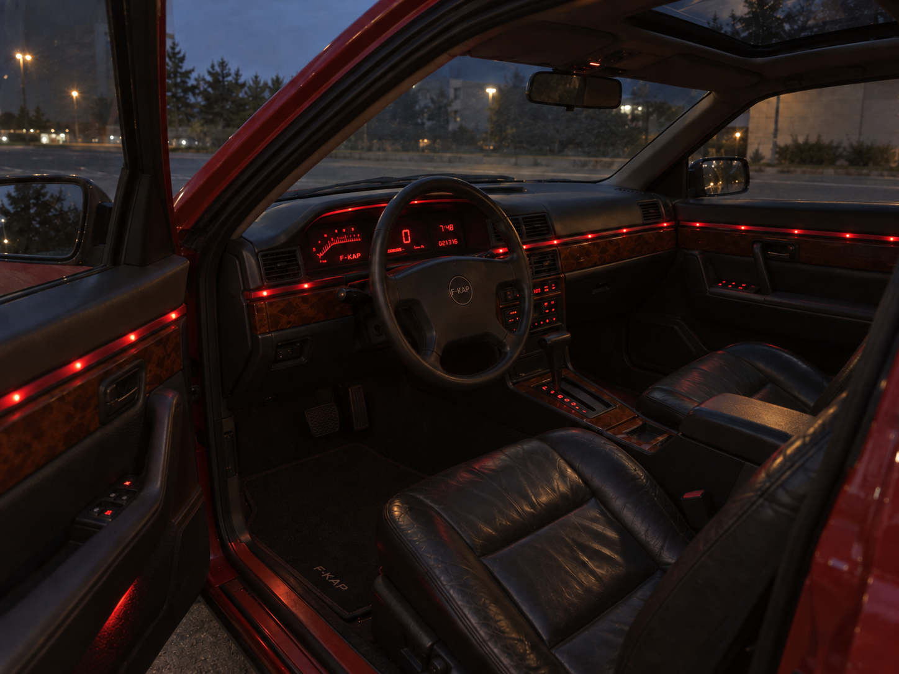
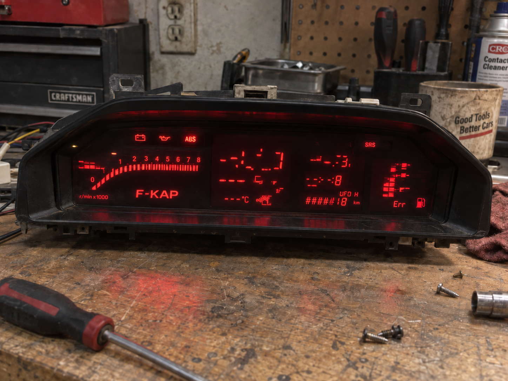
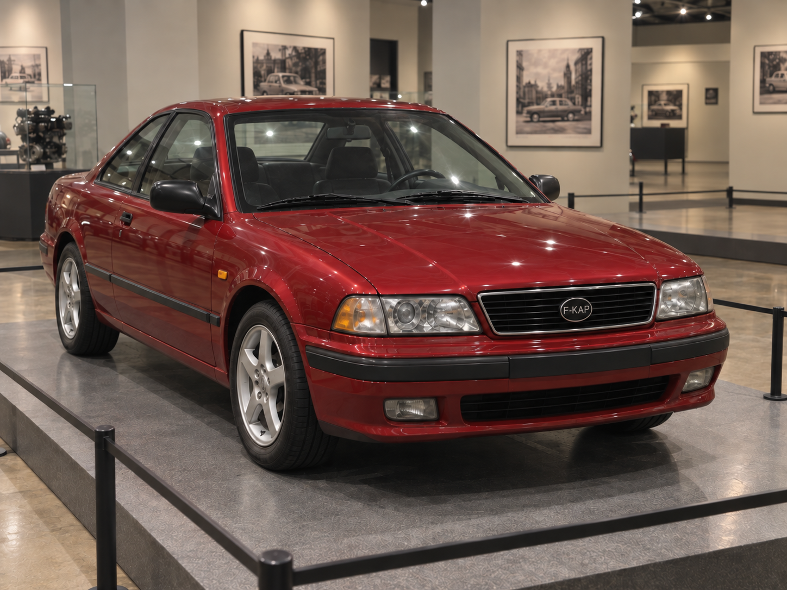
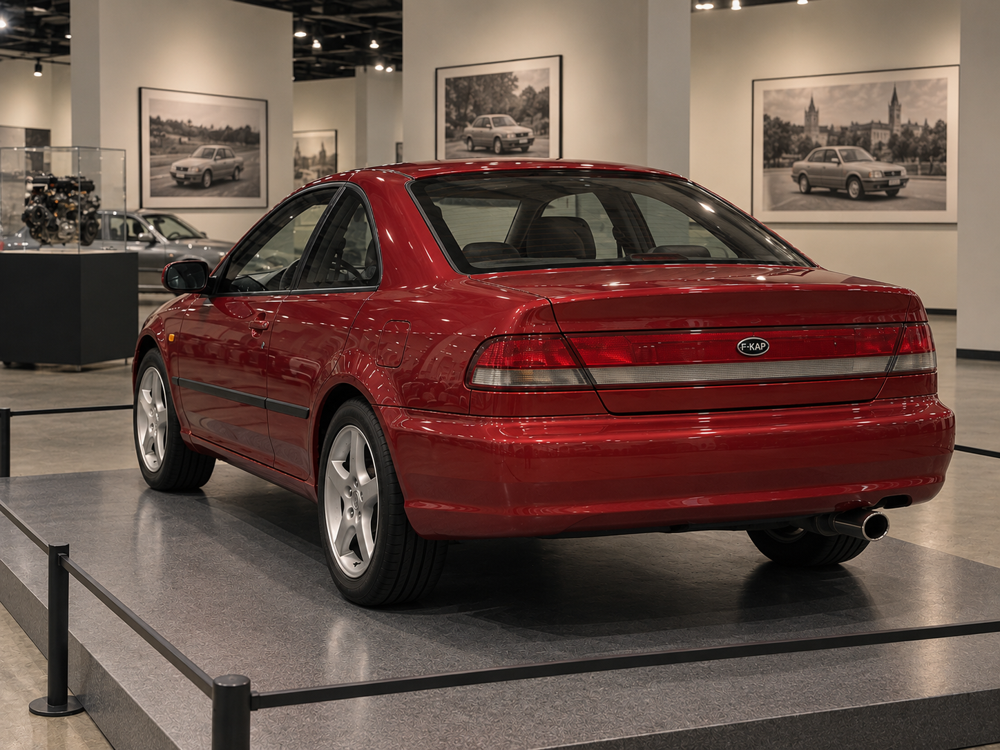

F-KAP Malina
F-KAP Malina — семейство легковых автомобилей компании F-KAP, выпускающееся с 1979 года. Серия создавалась как более дорогой двухдверный автомобиль с упором на комфорт, богатое оснащение и спокойную повседневную эксплуатацию. Основной формой Malina на протяжении истории оставалось купе, хотя характер машины постепенно становился более динамичным и спортивным.
В разные годы автомобили Malina получали двигатели V6 и V8, автоматические коробки передач, кондиционирование и отопление салона, цифровые приборные панели, декоративную подсветку, мультимедийные системы, электрорегулировки сидений, двухаккумуляторную схему и электронные системы управления отдельными функциями автомобиля. Часть решений сохранялась между поколениями, часть исчезала и позднее возвращалась уже в переработанном виде.
Наиболее резкое изменение направления произошло в пятом поколении, где попытка сделать Malina доступнее привела к заметному упрощению салона и необычной смеси технических решений. В шестом поколении серия вернулась к премиальному направлению, а с 2020 года основная версия перешла на V8 и получила более выраженные пропорции спортивного купе. В 2025 году вышло восьмое поколение, а в 2026 году на его основе впервые появилась отдельная версия Cabriolet.
F-KAP Malina
F-KAP Malina — первый автомобиль серии, представленный в 1979 году. Модель получила двухдверный кузов купе и создавалась как более дорогой автомобиль с повышенным вниманием к комфорту, шумоизоляции, климатическому оснащению и отделке салона. Название Malina использовалось с момента выхода автомобиля и позднее сохранилось за всеми следующими поколениями серии.
Конструкция
Первый автомобиль получил двигатель V6 и автоматическую коробку передач. В оснащение также входили кондиционер и развитая шумоизоляция. Силовая установка и набор оборудования подбирались не вокруг предельной спортивности, а вокруг сочетания спокойной езды, запаса мощности и более высокого уровня комфорта.
Салон
Интерьер сочетал искусственную кожу, деревянные вставки и металлические элементы. Такое сочетание материалов стало ранней формой визуального языка Malina: дерево должно было подчёркивать более высокий класс машины, а металл не скрывался полностью и оставался частью оформления. Полностью кожаным салон первого поколения не был.
Внешность первого автомобиля соответствовала общей стилистике крупных купе конца 1970-х годов, но уже при запуске Malina получила собственное имя и отдельное положение в модельной программе F-KAP.
Экспорт 1980 года
В 1980 году Malina начала экспортироваться в СССР и Китай. Одновременно F-KAP начал работу над праворульной модификацией для последующего выхода на рынки, где требовалось правое расположение органов управления.
Во время ранней подготовки японской версии среди работников распространялся слух, что ради местного рынка кузов могут укоротить и уменьшить задний ряд. Подтверждения эта версия не получила: серийная японская Malina первого поколения сохранила исходный полноразмерный кузов.
Праворульная версия и новые рынки
В 1981 году праворульная Malina вышла в Японии. Одновременно автомобиль начали поставлять в Южную Корею, ОАЭ и Египет. Для японской версии главным подтверждённым изменением было именно расположение органов управления; отдельного укороченного кузова или специального уменьшенного заднего ряда не появилось.
Египетская партия
Поставка автомобилей в Египет стала одним из ранних организационных эпизодов истории серии. В руководстве СКР отправку партии сочли очевидной ошибкой экспортного планирования. Уже отправленные автомобили вернуть было невозможно, а сотрудники, отвечавшие за решение, получили взыскание. Дальнейшая судьба конкретной партии отдельно не фиксировалась.
Переход к следующему поколению
К 1983 году первое поколение показало достаточный результат, чтобы F-KAP начал подготовку улучшенной Malina. При этом предприятие не отказалось от основной формулы машины: купе, V6, автоматическая трансмиссия, климатическая система и более дорогая отделка должны были сохраниться, а основное развитие переносилось в интерьер, оснащение и дизайн.
Значение для серии
Gen1 сформировал первоначальную идентичность Malina. Машина не вводила в историю F-KAP сами по себе V6, автомат или кондиционер — всё это у компании существовало раньше. Значение первого поколения заключалось в том, что эти элементы впервые были объединены в отдельном престижном купе, вокруг которого затем строилась вся дальнейшая линия Malina.
F-KAP Malina Gen2
F-KAP Malina Gen2 была представлена в 1985 году после примерно двух лет подготовки улучшенной версии первоначальной Malina. Второе поколение не ломало исходную формулу серии и по общей компоновке оставалось большим комфортным купе, однако заметно переработало салон, внешность и набор повседневного оборудования.
Предпосылки
Работы над новой Malina начались после того, как первое поколение к 1983 году показало достаточный успех для продолжения проекта. F-KAP не рассматривал вторую машину как полностью новую идеологию. Основной задачей было сделать уже существующую концепцию более современной и лучше оснащённой, не отказываясь от V6 и автоматической коробки.
Внешность
Внешность Gen2 была заметно переработана и стала более строгой и угловатой, соответствуя общему направлению автомобильного дизайна первой половины 1980-х годов. При этом автомобиль сохранял двухдверный кузов и общую роль комфортной Malina.
Салон и материалы
Внутри сохранилась общая преемственность с первым поколением, но материалы стали распределяться сложнее. Передние и основные сиденья отделывались кожей, тогда как задний ряд оставался тканевым. Приборная панель покрывалась искусственной кожей. В декоре по-прежнему использовались дерево и металл.
Такое сочетание означало, что Gen2 ещё не перешёл к полностью кожаному интерьеру. Более дорогая отделка концентрировалась в передней части салона и на тех местах, которыми чаще пользовались водитель и передний пассажир, тогда как задний ряд сохранял более простую тканевую обивку.
Климат и аудиосистема
Автомобиль получил встроенные кондиционер и печку. Аудиосистема была выполнена как полноценный блок MediaFon, а не как отдельный переносной приёмник. Для Malina это стало важной частью премиального оснащения: музыка и климат окончательно воспринимались не как внешние дополнения, а как обычные системы самой машины.
Дополнительное оснащение
В нижней части дверей появилась подсветка, освещавшая пространство рядом с автомобилем при открывании. Багажник получил тканевую отделку. Эти решения не меняли техническую основу автомобиля, но показывали, что F-KAP всё сильнее строит Malina вокруг мелких элементов комфорта, которые не были обязательны для массовых моделей компании.
Силовая часть
Gen2 сохранил V6 и автоматическую коробку передач. Подтверждённых данных о радикальной смене силовой установки для второго поколения не было: основное развитие происходило вокруг кузова, интерьера, климата, аудио и отделки.
Значение для серии
Второе поколение укрепило Malina как устойчивую премиальную линию F-KAP. Если Gen1 сформировал саму идею автомобиля, то Gen2 показал, что серия будет развиваться через последовательное усложнение салона и оснащения, а не через постоянную смену основной механической концепции.
F-KAP Malina Gen3
F-KAP Malina Gen3 — третье поколение серии, представленное в ноябре 1989 года. Именно эта версия впервые получила наиболее узнаваемые поздние черты Malina: полностью цифровую приборную панель на большинстве рынков, непрерывную красную декоративную линию салона и двухаккумуляторную электрическую систему. По сравнению с Gen2 автомобиль стал заметно самостоятельнее как внешне, так и по организации интерьера.
Разработка 1988 года
Работа над третьим поколением началась в 1988 году. К этому моменту внешний облик уже находился в разработке, а F-KAP отдельно сообщал о подготовке нового стиля салона, ограничиваясь формулировкой о том, что он должен быть «красивым». Конкретные характеристики будущей машины на этом этапе публично не раскрывались.
Ускорение осенью 1989 года
После резкого политического и экономического открытия Кивиша в конце октября 1989 года внутри F-KAP возникло опасение, что зарубежные производители быстро займут внутренний рынок. Это не стало причиной появления Gen3 с нуля: проект уже существовал с 1988 года. Однако темп работ был увеличен, чтобы завершить уже начатую Malina как можно быстрее.
Дизайн
Серийный Gen3 сохранил двухдверный кузов купе, но получил более прямолинейный облик конца 1980-х годов. Передняя часть использовала чёрную решётку с круглой эмблемой F-KAP, прямоугольные фары и чёрные декоративные элементы. Автомобиль получил новые легкосплавные колёса. В отличие от ранних Malina, внешность третьего поколения уже не связывалась с одной конкретной зарубежной моделью.
Салон
Интерьер был существенно переработан. Основными материалами стали кожа и дерево, а металлические декоративные вставки, характерные для предыдущих поколений, исчезли. В крыше появился люк. Таким образом Gen3 усилил именно дорогую сторону Malina и отказался от части смешанной отделки 1980-х.

Красная декоративная подсветка
Одной из главных особенностей Gen3 стала непрерывная красная световая линия по салону. На приборной панели она проходила вдоль всей основной горизонтальной линии под матовой полупрозрачной пластиковой полосой. За ней располагалась отдельная основа с индивидуальными красными светодиодами, установленными последовательно по длине панели.
Аналогичная линия использовалась на дверных картах и визуально продолжала подсветку приборной панели на том же уровне. Система не была RGB, не меняла цвет и не использовала анимационные переходы. Её задача заключалась в создании постоянного мягкого красного контура, который позднее стал одной из наиболее характерных идей Malina.
Цифровая приборная панель
Для большинства экспортных и внутренних гражданских версий использовалась полностью цифровая приборная панель. Скорость, обороты и дополнительная информация выводились электронно и подсвечивались мягким красным цветом, визуально связанным с общей декоративной линией салона.
Отдельная версия для СССР получила обычные механические стрелочные приборы. Причина этого решения официально не объяснялась. Позднее именно различие между цифровыми и стрелочными панелями стало важным для истории эксплуатации Gen3.
Двухаккумуляторная система
В багажнике располагались два аккумулятора: основной и резервный. Под рулевой консолью находился физический переключатель, позволяющий водителю выбирать резерв. Во время движения обе батареи заряжались одновременно.
Решение было связано с принятой ещё в эпоху СКР практикой ночной безопасности на плохо освещённых участках дорог. Автомобиль, оставленный ночью на тёмной дороге, должен был сохранять включённые габаритные огни. Резервная батарея позволяла питать освещение, не расходуя основной аккумулятор, необходимый для последующего запуска двигателя.
Силовая часть
Третье поколение сохранило V6 и автоматическую коробку передач. Несмотря на сильное изменение электроники и салона, F-KAP не отказался от привычной силовой формулы Malina, существовавшей с первого поколения.
Выход на рынки
При запуске в ноябре 1989 года Gen3 продавался в Южной Корее, Китае, Кивише, ОАЭ, ФРГ, Франции, Италии и США. Праворульной версии в момент старта ещё не существовало, поэтому Япония не входила в первоначальный список рынков нового поколения.
Реклама в США
Для американского запуска использовался слоган «купи то на чём ездили бывшие коммунисты». Реклама напрямую использовала политический перелом конца 1989 года как часть образа автомобиля и подчёркивала, что Malina до открытия рынка была характерной машиной Кивиша.
Праворульные автомобили 1990 года
В 1990 году F-KAP завершил праворульную модификацию Gen3 для Великобритании и Японии. В отличие от специальной советской версии, эти автомобили сохранили цифровую приборную панель. Таким образом стрелочные приборы не были общей особенностью машин с иным расположением руля и использовались именно в советской конфигурации.
Проблемы цифровых приборов 1995 года
Примерно через шесть лет эксплуатации у части цифровых панелей, производившихся компанией Eriket Holkov, начались массовые сбои. Дисплей скорости мог показывать случайные символы, данные температуры и топлива становились некорректными, а одометр иногда собирал бессмысленные сочетания знаков. Наиболее известным стало сообщение «UFO H».

На некоторых автомобилях при включении одновременно загорались различные контрольные лампы, создавая эффект «дискотеки». При этом советские, а затем российские Malina со стрелочными приборами производства Katalist продолжали работать нормально. F-KAP начал исследование неисправности цифровой системы.
Причина неисправности и разрыв с Eriket Holkov
В 1996 году стало понятно, что многие панели удаётся восстановить обычной пропайкой дорожек и контактов. Причиной оказался не программный сбой отображения, а быстрое окисление контактов и проводящих дорожек из-за недостаточной герметизации корпуса, допущенной Eriket Holkov.
Аналогичные проблемы обнаруживались и на более современных изделиях этого производителя. После этого F-KAP принял решение прекратить сотрудничество с Eriket Holkov и начать поиск более качественного поставщика приборной электроники. Название нового поставщика публично в этот момент не закреплялось.
MediaFon и переход к Sony
В том же 1996 году MediaFon подал на банкротство и больше не мог оставаться поставщиком аудиосистем. F-KAP вновь обратился к Sony. К этому времени Sony уже производил заменяющую магнитолу для более дешёвой массовой модели F-KAP, однако Malina требовала отдельного, более качественного варианта аудиосистемы, соответствующего её положению в линейке.
LED-лента и подготовка нового поколения
В 1998 году в Японии появилась более удобная форма светодиодной ленты на небольшой печатной плате. Инженеры F-KAP обратили внимание на сходство её принципа со старой системой Malina 1989 года: в обоих случаях ряд светодиодов формировал непрерывно воспринимаемую световую линию за рассеивателем.
При этом F-KAP не создавал саму LED-ленту. Система 1989 года использовала отдельные красные диоды, установленные на собственной основе, тогда как японское решение было компактнее и удобнее как готовый элемент. К этому моменту Gen3 исполнилось девять лет, и F-KAP начал разработку следующей Malina.
Значение для серии
Gen3 стал одним из ключевых поколений Malina. Он закрепил цифровые приборы, создал фирменную световую линию салона и ввёл двухаккумуляторную схему, к которой серия позднее вернулась. Одновременно проблемы панели Eriket Holkov показали слабость сложной электроники при недостаточном качестве физического исполнения и надолго сделали поставщиков приборных систем отдельной темой в истории модели.
F-KAP Malina Gen4
F-KAP Malina Gen4 была представлена 10 сентября 2001 года. Автомобиль развивал третье поколение эволюционно: основные принципы Malina сохранились, однако кузов адаптировали к более современным требованиям, немного уменьшили высоту и переработали интерьер. Gen4 стал последней основной Malina эпохи V6 перед неудачным экспериментом пятого поколения и последующим возвращением серии к премиальной формуле.
Разработка
Подготовка следующей Malina началась ещё в 1998 году, когда Gen3 уже около девяти лет находился на рынке. F-KAP не стал полностью отказываться от его архитектуры. Новая машина создавалась как эволюция: сохранялись основные пропорции, V6, цифровая приборная идея и внимание к интерьерному свету, но кузов приводился к нормам начала XXI века.
Кузов
Gen4 стал немного ниже, что объяснялось стремлением улучшить устойчивость на дороге. Внешние детали были обновлены под более современные стандарты, однако модель не уходила в совершенно другую кузовную категорию и оставалась двухдверным купе.
Салон и материалы
Внутри количество дерева уменьшилось. Кожа перестала закрывать приборную панель и сохранилась главным образом на сиденьях и дверных картах. Такое решение делало салон визуально проще, чем у Gen3, но не превращало автомобиль в бюджетную модель.
Одним из важных практических изменений стали электрические стеклоподъёмники. Для Malina это был естественный шаг в сторону более современного комфорта, который позднее особенно заметно контрастировал с решением пятого поколения вернуть ручные стеклоподъёмники.
Подсветка
Интерьерная световая система была развита. Вместо единственного красного цвета Gen3 появились красный, синий и зелёный. По принципу это уже приближало систему к RGB, однако она ещё не являлась современной полноцветной лентой с произвольным смешиванием миллионов оттенков и сложными переходами.
Приборная панель и Sony
Цифровая приборная панель сохранилась, но поставлялась уже другой компанией после разрыва с Eriket Holkov. Название производителя публично не афишировалось и могло быть установлено только при непосредственном разборе конкретной панели. Штатная аудиосистема поставлялась Sony.
Рекламный ролик 10 сентября 2001 года
Первая американская реклама Gen4 была построена вокруг новых возможностей автомобиля. В финале машины парковались возле комплекса Всемирного торгового центра в Нью-Йорке, а Malina называлась «центром новых возможностей». На момент выхода ролика 10 сентября такой финал представлял собой обычный образ современного делового Нью-Йорка.
Отзыв рекламы 11 сентября
На следующий день после террористических атак F-KAP срочно связался с телеканалами, на которых был оплачен показ ролика, и потребовал не ставить его в эфир. 11 сентября реклама не транслировалась. На несколько недель она полностью исчезла из ротации, а на части площадок конкретная версия ролика могла быть удалена из рабочих рекламных баз.
Эпизод не был связан с каким-либо предварительным знанием событий. Причиной отзыва оказался исключительно финал ролика, который после атаки на Всемирный торговый центр стал неприемлемым по контексту.
Новая американская версия и локальные кампании
Через несколько недель американскую рекламу полностью пересняли в Лос-Анджелесе. Это была не простая замена последнего кадра, а новая версия рекламного материала. Позднее F-KAP подготовил отдельные локализованные кампании для Токио, Москвы, Берлина, Парижа и Дубая.
Каждая кампания создавалась отдельно для конкретного рынка и должна была показывать практические преимущества Malina в местной среде. Дубайская версия намеренно была минималистичной: без голосовых заявлений о пользе, с автомобилем в обычном дорожном потоке и финальной парковкой рядом с главным городским ориентиром. Конкретный объект в описании кампании не закреплялся.
Эксплуатация 2001–2008 годов
В отличие от Gen3 с его проблемами цифровой панели и будущего Gen5 с большим количеством конструктивных противоречий, четвёртое поколение в 2001–2008 годах не получило заметного общесерийного дефекта или крупного технического скандала. Машина сохраняла репутацию стабильной и хорошо отработанной версии Malina.
2008 год
В 2008 году F-KAP объявил о подготовке новой Malina. На этом этапе конкретная конфигурация будущего автомобиля ещё не раскрывалась. Следующая серийная машина появилась в 2010 году как Gen5 и резко отошла от направления четвёртого поколения.
Возврат производства в 2011 году
После кризиса, вызванного пятой Malina, в январе 2011 года F-KAP объявил о переносе производства Gen5 на другую площадку. Завод, на котором до этого собиралась новая модель, временно вернулся к производству Malina начала 2000-х годов — то есть Gen4 — для покупателей, которые хотели проверенную и более качественно воспринимаемую конфигурацию.
Такой возврат был временным. После выхода Gen6 в 2012 году производство четвёртого поколения снова прекратили. Gen5 при этом не исчезла и продолжила существовать параллельно как более доступная Malina.
Значение для серии
Gen4 стал важной точкой стабильности в истории Malina. Он развил цифровую и световую архитектуру Gen3, добавил электростеклоподъёмники и современную Sony-мультимедию, но не стал радикальным экспериментом. Именно поэтому в 2011 году F-KAP смог использовать старую модель как временную опору после провала направления Gen5.
F-KAP Malina Gen5
F-KAP Malina Gen5 была представлена в 2010 году и стала наиболее противоречивым поколением серии. Внешне автомобиль выглядел сравнительно обычным, однако одновременно резко потерял многие премиальные элементы предыдущей Malina и получил ряд технических решений, назначение которых стало понятно только после разборки серийных машин.


Предпосылки
Разработка следующей Malina была объявлена в 2008 году после длительного периода стабильной эксплуатации Gen4. В 2010 году новая машина вышла как пятое поколение. В отличие от последующей Gen6, она пыталась сделать Malina более доступной и одновременно более необычной, но в серийной конфигурации эти задачи оказались плохо согласованы друг с другом.
Дизайн
Внешность неожиданно вернулась к отдельным чертам Gen3, особенно в общей геометрии кузова и оформлении задней части. При этом автомобиль выглядел значительно проще предыдущей Malina и сильнее отходил от сложившегося премиального образа серии.
Задняя светотехника была выполнена в виде длинной почти непрерывной горизонтальной секции. Для Malina это было новым решением и стало одной из наиболее заметных внешних особенностей пятого поколения.
Отказ от прежней световой идентичности
Фирменная интерьерная световая линия, существовавшая с 1989 года и развивавшаяся в Gen4, была убрана. Это означало, что одна из наиболее устойчивых визуальных черт Malina исчезла именно в поколении, которое одновременно пыталось добавить новую развлекательную работу внешней светотехники.
Салон и удешевление
Премиальная отделка была существенно сокращена. Салон стал в основном тканевым, деревянные вставки исчезли, а Sony-консоль стала проще и функционально беднее систем, использовавшихся в предыдущих Malina. Особенно заметным шагом назад стало исчезновение электрических стеклоподъёмников: Gen5 получила обычные ручные стеклоподъёмники.
Музыкальное управление наружным светом
Одновременно автомобиль получил необычную функцию анализа музыки. Система могла определять тональность или характер воспроизводимого звука и в зависимости от него включать разные группы внешней светотехники: указатели поворота, противотуманные фары, основные фары и габаритные огни.
В первоначальной версии Gen5 конкретные ограничения режима по движению или стоянке отдельно не фиксировались. Из-за этого функция существовала как самостоятельный развлекательный элемент без той чёткой логики, которую позднее получила светомузыка Gen6.
Контуры задних дверей
На боковинах кузова существовали полноценные контуры задних дверей, хотя автомобиль продавался как купе. Наружных ручек не было, а сами панели снаружи выглядели заваренными и неработающими. Первоначально это воспринималось как странность штамповки кузова, однако позднее выяснилось, что под внутренней отделкой скрывается намного больше деталей.
Открытие механизма задней двери
Российские владельцы и авторы автомобильных видео сняли внутренние карты в задней части салона и обнаружили за ними трос, закреплённый внутри, а также структуру, напоминавшую полноценный дверной механизм. После аккуратного освобождения внешнего контура при помощи угловой шлифовальной машины трос удалось потянуть.
После этого задняя дверь открылась. Внутри находился работающий замок и защёлка. Таким образом скрытый контур оказался не просто декоративной линией кузова: в серийной машине действительно присутствовала полноценная дверная архитектура, которую на заводе сделали недоступной снаружи и фактически закрыли как часть купейной конфигурации.
Отсек под PlayStation 3
При разборке Sony-консоли владельцы обнаружили металлический отсек, назначение которого первоначально было непонятно. Позднее выяснилось, что по размерам он практически точно соответствовал игровой консоли PlayStation 3.
При этом исходная Gen5 не имела экрана, необходимого для нормального использования консоли. Наличие Sony-аудиосистемы и совпадение размеров естественно связывали находку с PlayStation, однако официально подтверждённой ранней программы интеграции PS3, специальной видеопроводки или отменённого экрана для машины не объявлялось.
Кривой стартер
Позднее при осмотре автомобилей в Канаде в багажнике обнаружили кривой стартер — ручную пусковую рукоятку. При этом в передней части кузова не существовало отверстия или иного внешнего доступа, через который этой рукояткой можно было бы воспользоваться.
Назначение детали в первоначальной машине официально не объяснялось. Поэтому кривой стартер стал ещё одним примером элемента, который физически присутствовал в серийной Malina, но не имел очевидного рабочего сценария в конечной конфигурации.
Несоответствие двигателя
Наиболее серьёзное открытие касалось силовой установки. Автомобиль имел шильдик V6, и V6 указывался в описании и спецификации, однако при фактическом осмотре под капотом находился турбированный рядный четырёхцилиндровый двигатель.
Причина расхождения между маркировкой, документацией и реальным двигателем не была объяснена. Не устанавливалось также, существовала ли отдельная полноценная серийная партия Gen5 с настоящим V6 или изменение силовой установки произошло до основного выпуска. В 2013 году F-KAP исправил по крайней мере маркировочную часть проблемы, заменив обозначение.
Январь 2011 года
После нескольких месяцев эксплуатации и нарастающего количества вопросов F-KAP начал выпускать для разных рынков отдельные рекламные обращения с извинениями. Компания объясняла, что пыталась сделать автомобиль более интересным и доступным не только для самых богатых покупателей, но в процессе фактически забыла, для чего Malina создавалась изначально.
После этого производство Gen5 решили перенести на другую площадку. Завод, который выпускал её до этого, временно вернулся к производству Gen4 начала 2000-х годов для покупателей, ценивших проверенную конфигурацию и качество. Одновременно F-KAP объявил начало разработки действительно нового автомобиля — будущей Malina Gen6.
Ревизия 2013 года
В 2013 году пятое поколение серьёзно пересобрали. Целью стало убрать наиболее очевидные несоответствия и одновременно закрепить Gen5 как более дешёвую Malina, существующую ниже премиальной Gen6.
Шильдик V6 заменили на честное обозначение I4. Кривой стартер исключили из комплекта. В штатной магнитоле появился цифровой экран. Металлический отсек и разъёмы, связанные с PlayStation 3, сохранили, но теперь их наконец можно было использовать: консоль подключалась к автомобильной мультимедии и позволяла играть через установленный экран.
Отказ от светомузыки
Музыкальное управление внешней светотехникой в ревизии 2013 года убрали. Причина была практической: F-KAP хотел сделать Gen5 дешевле и отказался от функции, которая увеличивала сложность автомобиля, но уже не была необходима для его нового положения в линейке.
Новая схема задних дверей
В производстве перестали заваривать задние двери как в ранней Gen5. Механизм сделали полноценным и доступным изнутри. При этом наружных ручек по-прежнему не появилось: F-KAP сохранял чистую боковую линию купе и намеренно делал задние двери невидимыми для человека, стоящего снаружи.
В результате поздняя Gen5 фактически представляла собой автомобиль с дополнительными задними дверями, которые можно было открыть только из салона. Это решение оставалось необычным, но в отличие от ранней заваренной конструкции уже имело понятную практическую функцию.
Положение рядом с Gen6
После выхода Gen6 в 2012 году пятую Malina не сняли с производства. Её оставили как вариант для покупателей, которым хотелось автомобиль с внешним статусом и именем Malina, но которые не могли или не хотели платить за полноценное премиальное оснащение шестого поколения.
Завершение производства
Производство Gen5 продолжалось до 2020 года. В год выхода Gen7 F-KAP окончательно прекратил выпуск пятой версии. Таким образом наиболее странное поколение Malina прожило значительно дольше своей первоначальной конфигурации, однако поздние автомобили уже заметно отличались от машин 2010 года благодаря ревизии 2013-го.
Значение для серии
Gen5 стала примером того, как попытка одновременно удешевить премиальное купе и добавить нестандартные функции может разрушить внутреннюю логику модели. Скрытые двери, отсек под PlayStation 3, бесполезный кривой стартер, ручные стеклоподъёмники, упрощённая Sony-система и несоответствие двигателя сделали раннюю версию уникальным эпизодом истории F-KAP. Ревизия 2013 года не уничтожила Gen5, а превратила её в отдельную более дешёвую ветвь.
F-KAP Malina Gen6
F-KAP Malina Gen6 была представлена в 2012 году как фактическое возвращение основной линии Malina к премиальному направлению. После Gen5 компания вновь сделала дорогую версию главным автомобилем семейства, а пятую модель оставила параллельно как более доступный вариант. Gen4, временно возвращённая в производство в 2011 году, после выхода Gen6 снова была снята с конвейера.
Кузов и характер
Gen6 получил более низкий кузов и в целом стал восприниматься как более спортивное купе. При этом автомобиль не превращался в отдельный чистый спорткар: премиальный салон, электрические регулировки, подогрев, мультимедиа и развитая подсветка оставались не менее важной частью модели, чем новый спортивный режим.
На кузове больше не существовало дополнительных скрытых задних дверей по схеме Gen5. Gen6 вернулась к однозначной купейной конструкции без внешних контуров заваренных или скрытых задних дверей.
Двигатель и спорт-режим
Под капотом снова находился настоящий V6. После путаницы Gen5 возвращение физического V6 имело принципиальное значение для идентичности Malina. Одновременно появился спорт-режим, подчёркивавший новое смещение автомобиля в сторону более активного и динамичного купе.
Конкретный набор параметров, которые менял спорт-режим, отдельно не фиксировался, поэтому его нельзя сводить к определённой перенастройке подвески, коробки или двигателя. В истории модели он закреплён именно как самостоятельный режим более спортивной эксплуатации.
Салон
Премиальная отделка была возвращена. Автомобиль получил кожаные сиденья с электрической регулировкой. В качестве дорогой функции появился подогрев сидений. Электрические стеклоподъёмники, исчезнувшие на Gen5, снова стали частью Malina.
В крыше вновь появился люк. Таким образом Gen6 вернул сразу несколько элементов, которые связывали модель с прежней премиальной линией: дорогие материалы, электрические функции, люк и более сложную электронную архитектуру.
Цифровая приборная панель и мультимедиа
Приборная часть получила новую электронную панель с экраном. Центральная магнитола также оснащалась крупным по меркам начала 2010-х дисплеем. Система работала на базе Android и стала центром управления не только аудио, но и частью световых функций автомобиля.
Возвращение RGB-подсветки
Интерьерная световая линия вернулась уже в значительно более развитом виде. Вместо фиксированных красного, синего и зелёного цветов Gen4 использовалась полноценная RGB-подсветка, способная менять оттенок значительно свободнее.
В обычном музыкальном режиме Android-система анализировала тональность и характер композиции, выбирала соответствующий цвет салона и мягко увеличивала или уменьшала интенсивность света в такт музыке. Таким образом функция Gen5, где музыка управляла внешними лампами, была переосмыслена как постоянная атмосферная система внутри салона.
Режим внешней светомузыки
Развлекательную идею Gen5 полностью не удалили. Если автомобиль стоял, а водитель специально включал соответствующий режим через магнитолу, Malina могла управлять внешней светотехникой под музыку. В шоу участвовали фары, указатели поворота и другие группы света.
При открытых двух дверях музыка из салона лучше выходила наружу через штатные динамики, а световая система продолжала работать как визуальное сопровождение. В отличие от Gen5, эта функция была отделена от обычной поездки и получила понятный стояночный режим.
Два аккумулятора
Gen6 вернула двухаккумуляторную систему, известную по Gen3. В этом поколении она снова существовала как часть электрической архитектуры Malina и сочеталась с большим количеством салонной электроники, экранов и световых функций.
Параллельное производство Gen5
Выход шестого поколения не означал немедленное исчезновение пятого. F-KAP развёл модели по назначению: Gen5 оставалась более дешёвой Malina для покупателей, которым нужен был внешний статус купе без полного премиального набора, а Gen6 снова становилась основной дорогой и технически насыщенной версией.
Подготовка следующего поколения
В 2018 году появилась информация о начале разработки Malina Gen7. F-KAP официально не проводил полноценную публичную презентацию проекта и не раскрывал будущие характеристики. Известен был только сам факт подготовки нового поколения.
Значение для серии
Gen6 вернула Malina к той роли, от которой серия отклонилась в 2010 году. В одной машине снова соединились настоящий V6, премиальная отделка, электрическое оснащение, люк, развитая цифровая система, RGB-подсветка и более спортивный характер. При этом F-KAP не отказался от самой удачной экспериментальной идеи Gen5 — связи света с музыкой — а просто встроил её в более логичную архитектуру.
F-KAP Malina Gen7
F-KAP Malina Gen7 была представлена в 2020 году и стала самым заметным изменением пропорций серии после Gen6. Автомобиль стал длиннее и ниже, сильнее сместил пространство в пользу передней части и впервые в основной истории Malina отказался от V6 в пользу V8. Производство сразу организовали на двух площадках для леворульных и праворульных автомобилей.
Два направления производства
В отличие от ранних поколений, где праворульную Malina приходилось доводить уже после основного запуска, Gen7 с самого начала проектировалась для двух направлений. Отдельные производственные площадки выпускали леворульные и праворульные машины, что позволяло одновременно обслуживать рынки с разной организацией движения.
Пропорции кузова
Кузов стал заметно более вытянутым и низким. Капот немного удлинили, подчёркивая переднюю часть автомобиля и новую силовую установку. Одновременно задняя часть салона и багажник стали компактнее.
Задний ряд
Формально Malina сохраняла задние сиденья и оставалась автомобилем схемы 2+2, однако пространство для задних пассажиров сильно сократилось. Для взрослого человека нормальная посадка становилась почти невозможной, и задний ряд фактически оставался пригодным прежде всего для детей или очень короткого использования.
Багажник
Вместе с уменьшением задней части салона сократился и багажник. Это было одним из наиболее заметных компромиссов новой компоновки: машина стала визуально длиннее, но прибавка общей длины не превращалась в дополнительный объём для багажа, поскольку передняя часть кузова и капот получили больший приоритет.
V8 и завершение эпохи V6
Главным техническим изменением стал переход на V8. Для Malina это означало конец очень длинной эпохи V6, которая началась ещё с первого поколения 1979 года и после временной путаницы Gen5 была восстановлена в Gen6. С 2020 года основной бензиновый автомобиль серии строился уже вокруг восьмицилиндрового двигателя.
Более тихая основа
Gen7 получил более тихую конструктивную основу. Несмотря на переход к V8 и более спортивным пропорциям, F-KAP не отказался от традиционного для Malina внимания к комфорту и снижению шума. Машина должна была сочетать более мощный двигатель с спокойной внутренней средой.
Салон и экран
Центральный дисплей стал ещё крупнее. При этом общая цифровая линия Gen6 сохранялась: Malina оставалась автомобилем с развитой электронной панелью и RGB-подсветкой. В Gen7 F-KAP не стал повторять ошибку пятого поколения и не убрал световую идентичность салона.
Комбинированные сиденья
Сиденья перестали быть полностью кожаными. Кожу сохранили по боковым частям, а основную центральную поверхность сделали тканевой. F-KAP объяснял решение эксплуатацией подогрева: повторяющиеся циклы нагрева и охлаждения кожи могут ускорять её разрушение.
Компания отдельно указывала на неприятный сценарий старого повреждённого сиденья: если кожаная поверхность рвётся, человеку становится неудобно садиться на жёсткие и острые края разрушившейся основы. Тканевая центральная часть должна была уменьшить нагрузку именно на ту область, которая сильнее всего нагревается и постоянно контактирует с телом пассажира.
Электронный стояночный тормоз
Механический ручник был заменён электронным стояночным тормозом, управляемым кнопкой. Это стало ещё одним шагом к более современной салонной архитектуре и убрало из центральной части интерьера крупный механический рычаг.
Автоматическая двухаккумуляторная система
Два аккумулятора сохранились, но ручное переключение, известное по Gen3, окончательно исчезло. Теперь автомобиль сам управлял работой двух батарей, и водитель не должен был физически выбирать основной или резервный аккумулятор отдельной кнопкой или переключателем.
Отказ от светомузыки
Внешний музыкальный световой режим Gen6 был удалён. Причиной называлось удешевление производства. При этом обычная RGB-подсветка салона сохранилась, поэтому отказ касался именно развлекательной функции управления фарами и другой наружной светотехникой под музыку.
Завершение Gen5
В том же 2020 году F-KAP прекратил производство пятого поколения. К этому моменту Gen5 после ревизии 2013 года почти десять лет существовала как отдельная более дешёвая ветвь, но появление Gen7 окончательно завершило её производственную историю.
Электрическая версия 2021 года
В 2021 году F-KAP начал выпуск электрической версии на основе Gen7. К этому моменту компания уже увидела потенциал собственного электрического направления, особенно на американском рынке, и решила перенести этот опыт на Malina.
Электрическая Gen7 не заменяла основную V8-модель и не означала отказ от бензиновой линии. Это была отдельная ветвь на основе существующего кузова. Конкретная архитектура тяговой батареи, количество электромоторов и технические характеристики этой версии публично в истории Malina не закреплялись.
Закрытие электрического проекта в 2022 году
Уже в 2022 году производство электрической Malina решили прекратить. Сделанные для неё наработки не перенесли сразу в следующую серийную Malina и фактически убрали из рабочего проекта. Причина закрытия отдельно не публиковалась.
Только в конце 2022 года электрическую машину решили сохранить как исторический объект и отправили в музей автозавода F-KAP. При этом отдельная линия E-Up продолжила существовать: закрытие касалось именно попытки построить электрическую Malina на базе Gen7.
Значение для серии
Gen7 окончательно превратил Malina из традиционного V6-купе в более длинный, низкий и мощный автомобиль с V8. Одновременно он сохранил RGB, цифровую архитектуру и два аккумулятора, но сделал часть старых решений менее заметной для водителя за счёт автоматизации. Краткая электрическая версия показала, что F-KAP рассматривал альтернативу V8, однако в основной Malina это направление не закрепилось.
F-KAP Malina Gen8
F-KAP Malina Gen8 была представлена в 2025 году без длительной предварительной кампании слухов. В отличие от Gen7, новое поколение не стало крупным техническим разрывом. F-KAP сохранил основную механику, функции и интерьер предыдущей машины, переработав внешний облик под более современные стандарты и исправив часть практических недостатков.
Преемственность с Gen7
В основе Gen8 осталась архитектура седьмого поколения. Сохранился V8, основные электронные функции, RGB-подсветка и общий принцип салона. Таким образом новая цифра поколения не сопровождалась очередной полной сменой философии Malina.
Внешность была приведена к более современному языку. На представленном автомобиле использовалась более гладкая передняя часть, узкая современная оптика, широкая чёрная решётка и сохранённый низкий двухдверный силуэт. При этом Gen8 оставалась узнаваемым продолжением длинной и низкой линии, заданной в 2020 году.
Салон и функции
Салон в основном сохранили от Gen7. Существенного отказа от цифровой архитектуры, крупного экрана, комбинированных сидений, электронной стояночной системы или автоматической двухаккумуляторной схемы не происходило. Gen8 строилась вокруг уже отработанного набора функций, а не вокруг демонстративной замены оборудования ради нового поколения.
Багажник
Объём багажника немного увеличили. Это было прямым исправлением одного из компромиссов Gen7, где более длинный кузов сочетался с уменьшенной задней частью и сравнительно коротким багажным отсеком. Gen8 не превращалась в практичный семейный автомобиль, но получила немного больше полезного пространства сзади.
Отказ от люка
Одновременно F-KAP убрал люк в крыше. Эта функция, возвращённая в Gen6 и существовавшая в премиальной линии Malina, больше не входила в обычную Gen8. Причина удаления отдельно не закреплялась; для самого автомобиля это означало один из немногих явных шагов назад по списку оснащения относительно предыдущих премиальных поколений.
Steam Deck в бардачке
Наиболее необычной особенностью комплектации стал Steam Deck. F-KAP специально заказал отдельную партию портативных игровых устройств и начал класть их в бардачок вместе с новыми автомобилями.
В отличие от истории Gen5 с загадочным отсеком размеров PlayStation 3, в Gen8 не требовалось разбирать консоль или догадываться о назначении пустого пространства. Покупатель буквально получал готовое игровое устройство как подарок вместе с машиной. Специальная обязательная интеграция Steam Deck с электроникой Malina отдельно не объявлялась: зафиксирован именно комплектный подарок в бардачке.
Сохранение V8
После закрытия электрической Gen7 F-KAP не стал переводить следующее поколение Malina на электрическую основу. Gen8 сохранила V8, тем самым подтвердив, что основная серийная линия модели после 2020 года продолжает развиваться вокруг восьмицилиндрового двигателя, а электрический проект 2021–2022 годов остался отдельным эпизодом.
Значение для серии
Gen8 стала одним из наиболее спокойных переходов в истории Malina. Она не пыталась отменить Gen7 и не исправляла катастрофический провал, как Gen6 после Gen5. Вместо этого F-KAP сохранил уже работающую основу, немного улучшил практичность, обновил внешний вид и добавил необычную маркетинговую деталь в виде Steam Deck.
F-KAP Malina Gen8 Cabriolet
В 2026 году F-KAP впервые за всю историю Malina выпустил отдельную версию Cabriolet. Машина создавалась на основе восьмого поколения и не считалась Gen9. Главным изменением стала крыша: постоянную жёсткую верхнюю часть кузова заменили автоматически складывающейся конструкцией с электроприводом.
Первая Malina с открытым кузовом
До 2026 года Malina оставалась серией закрытых купе, даже когда пропорции автомобиля становились всё ниже и спортивнее. Cabriolet впервые превратил крышу из постоянной части кузова в управляемый элемент и создал отдельную открытую конфигурацию внутри уже существующего поколения.
Механизм крыши
Управление осуществлялось кнопкой. После нажатия электромоторы самостоятельно складывали крышу и убирали её в багажник. Водителю не требовалось выходить из автомобиля, вручную освобождать крепления или отдельно укладывать элементы верхней части.
При необходимости крыша могла быть поднята обратно тем же способом. Если во время поездки или стоянки начинался дождь, водитель нажимал кнопку, после чего электропривод закрывал салон настолько быстро, насколько позволяла скорость самого механизма. Точное время полного открытия или закрытия отдельно не фиксировалось.
Крыша и багажник
В сложенном состоянии крыша размещалась внутри багажника. Это напрямую связывало новую функцию с задней компоновкой Gen8: обычное восьмое поколение как раз получило немного увеличенный багажный отсек, а в Cabriolet часть этого пространства теперь использовалась для хранения сложенной крыши.
Рынки
Cabriolet изначально предназначался только для четырёх рынков: США, Италии, ОАЭ и Беларуси. Другие традиционные рынки Malina, включая Германию, Великобританию и Японию, в первоначальный список этой версии не вошли.
Причина именно такого набора стран отдельно не объяснялась. Поэтому Беларусь стала необычным, но официально включённым рынком первой открытой Malina наряду с тремя странами, где большие дорогие купе и кабриолеты уже имели очевидную нишу.
Место в линейке
Gen8 Cabriolet не заменял обычное купе и не завершал восьмое поколение. Это была отдельная кузовная версия той же Malina, впервые расширившая семейство не новым поколением, а другим типом крыши и открытым режимом эксплуатации.
Значение для серии
Cabriolet стал последней зафиксированной на 2026 год крупной новой формой Malina и первым открытым автомобилем в истории семейства. После десятилетий изменений двигателей, электроники, приборных панелей, подсветки и салона F-KAP впервые изменил базовый принцип самого кузова, сделав крышу автоматически убираемой частью автомобиля.
Основные технические линии развития
Двигатели
С 1979 года основной силовой формулой Malina был V6. Он использовался в Gen1, Gen2, Gen3, Gen4 и вновь был возвращён в Gen6. Gen5 формально продавалась и маркировалась как V6, однако фактически получила турбированный рядный четырёхцилиндровый двигатель; в ревизии 2013 года обозначение исправили на I4. В 2020 году Gen7 окончательно завершила эпоху V6 и перешла на V8, который сохранился в Gen8.
Приборная электроника
Полностью цифровая приборная панель стала важной частью серии с Gen3. Исключением была специальная советская конфигурация третьего поколения со стрелочными приборами Katalist. После проблем цифровых панелей Eriket Holkov F-KAP сменил поставщика, а поздние поколения продолжили развивать экранную приборную архитектуру. К Gen6 в автомобиле существовала отдельная электронная панель с экраном и крупная центральная мультимедиа.
Интерьерная подсветка
Световая линия появилась в 1989 году как ряд отдельных красных светодиодов за матовым рассеивателем на приборной панели и дверях. Gen4 расширила систему до трёх основных цветов. Gen5 полностью убрала прежнюю интерьерную линию, после чего Gen6 вернула её уже в виде полноценной RGB-подсветки, способной реагировать на музыку. Gen7 и Gen8 сохранили RGB как постоянную часть современного салона Malina.
Музыка и свет
Gen5 впервые связала музыкальный анализ с внешними фарами, поворотниками и другой светотехникой, однако первоначальная система не имела достаточно чётко описанного режима использования. Gen6 сохранила идею, разделив её на два сценария: обычную RGB-реакцию салона на тональность и бит музыки и отдельное внешнее световое шоу, доступное при стоянке после специального включения режима. В Gen7 внешнюю светомузыку убрали ради снижения производственных затрат.
Два аккумулятора
Двухаккумуляторная система впервые появилась в Gen3 и была связана с ночной эксплуатацией габаритного света без риска разрядить основной аккумулятор перед запуском. В ранней системе существовал физический переключатель под рулевой консолью, а обе батареи заряжались одновременно во время движения. После перерыва система вернулась в Gen6, а в Gen7 её работу автоматизировали, убрав необходимость ручного выбора батареи.
Мультимедиа
В ранних поколениях Malina использовала MediaFon. После банкротства компании в 1996 году F-KAP снова обратился к Sony, которая подготовила более качественную систему для премиальной модели. Gen5 получила упрощённую Sony-консоль и странный внутренний отсек под PlayStation 3; после ревизии 2013 года появился экран и сохранённые разъёмы наконец позволили реально использовать консоль. Gen6 развила центральный экран и Android-систему. В Gen8 история игровой электроники получила уже совсем прямую форму: Steam Deck просто начали класть покупателю в бардачок как подарок.
Кузовная эволюция
Malina начиналась как классическое двухдверное премиальное купе. Gen5 стала исключением: под внешне купейным кузовом существовала полноценная архитектура дополнительных задних дверей, первоначально заваренных, а с 2013 года открывавшихся только изнутри. Gen6 вернулась к однозначному купе. Gen7 сделала кузов длиннее и ниже, почти превратив задний ряд в детский, а Gen8 сохранила эту общую концепцию. В 2026 году впервые появилась открытая версия Cabriolet.
См. также
Примечания
- Материал основан на вымышленной вселенной Neverpedia и каноне F-KAP, составленном автором проекта.